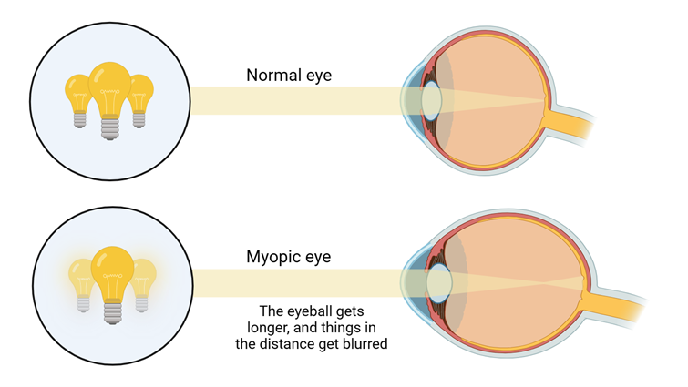
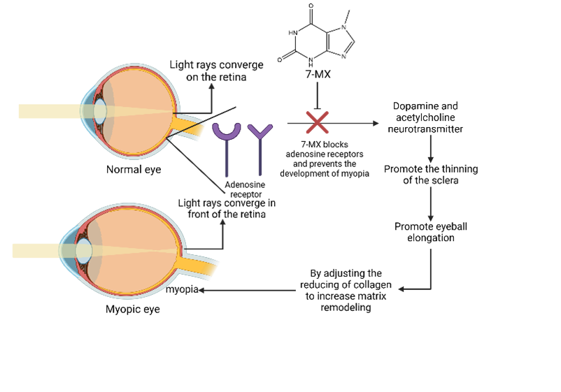
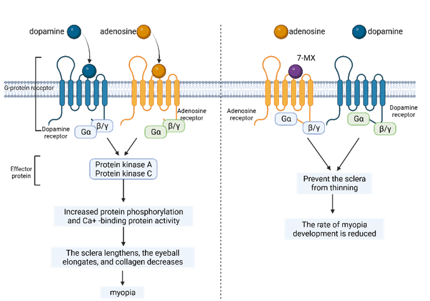
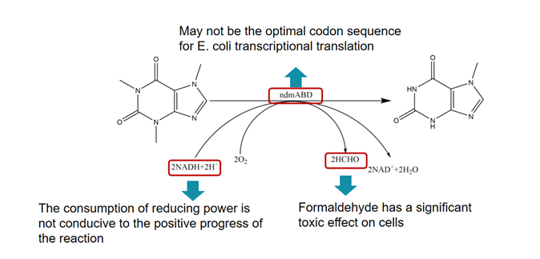
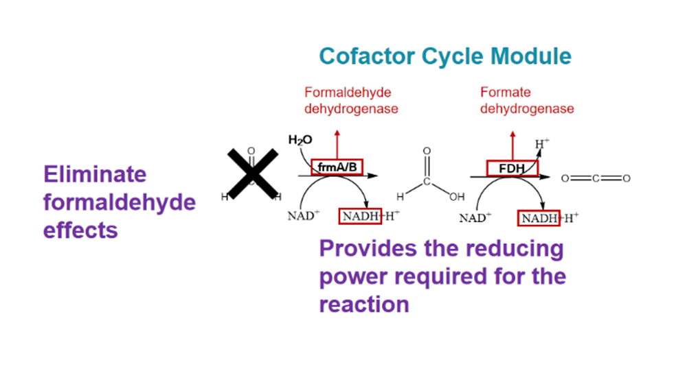

Inspiration
Our team members possess diverse perspectives and viewpoints in synthetic biology. Nevertheless,
it is
our ultimate consensus that we fervently aspire to draw inspiration from our quotidian
experiences in
order to formulate a project that can effectively improve the overall standard of life. Frequent
gatherings are held to engage in collaborative ideation sessions aiming at devising strategies
to
address practical challenges through the application of synthetic biology. With careful
examination, we
realized that a large portion of our team members are currently afflicted with myopia.
Subsequently, by
means of systematic observation, conducting interviews, and consulting relevant reports, we
concluded
that the prevalence of myopia was experiencing a notable surge within the general population. In
our
analysis of café statistics, a significant proportion of consumers exhibited varying degrees of
myopia.
In order to elucidate this occurrence, it is postulated that certain individuals consume coffee
as a
means to enhance their cognitive focus and sustain wakefulness to work on tasks requiring
heightened
attention, such as manuscript writing and computing programming, which can promote formation of
myopia.
Nevertheless, the current myopia treatment have numerous limitations. Therefore, our objective
is to
develop a secure and dependable strategy with the potential for long-term utilization, to
fundamentally
alleviate the development of myopia.
Background
Myopia
Myopia is recognized as one of the three prominent global disorders. Currently, the global
prevalence of
myopia is at approximately 30%.1 The prevalence of myopia in China is estimated to be over 400
million
individuals, with teens accounting for about 270 million of this population.2 In 2015, the
global
economic cost resulted from unaddressed myopia and vision impairment caused by myopic macular
degeneration was estimated to be a staggering $244 billion.3 According to the forecast, the
global
population of individuals afflicted with myopia will escalate to five billion in 2050 year,
leading to
an exacerbation of health-related complications and a consequential amplification of economic
burdens.4
Myopia is caused by elongation of the axis-oculi and reduction in lens’ focal length, resulting
in an
elongated or egg-shaped eyeball. The progression of myopia has the potential to result in
several ocular
complications, including cataract, glaucoma and irreversible visual impairment.5

7-methylxanthine
7-methylxanthine (7-MX), a natural metabolite of caffeine, is a novel and ideal drug suitable
for
long-term oral administration by people of all ages to alleviate myopia development. It is a
non-selective adenosine antagonist that causes scleral thickening and increases the diameter of
the
scleral collagen fibers. These effects are in contrast to the reported changes in myopic eyes.
Moreover,
7-MX exhibits negligible toxicity, absence of allergenic effects, blood-brain permeability, and
decent
efficacy. When taken orally, it can satisfy nearly all optimal drug criteria for the treatment
of
progressive myopia.6,7


Coffee residues
The expansion of the worldwide coffee market has resulted in a steady rise in the production of
coffee
residues. According to the International Coffee Organization, the global annual production of
coffee
residues exceeds 6 million tons.8 They are expected to be used as forage, but the residual
caffeine
leads to diminished feed intake of cattle, decreased protein digestibility, and reduced nitrogen
retention.9
Current Methods
Myopia treatments
Currently, we still lack effective approaches for the prevention and treatment of myopia. The
existing
remedies like glasses can improve visual acuity by rectifying refractive errors, but they cannot
address
the underlying pathological mechanisms, which cause continual elongation of the axis-oculi and
progression of myopia. Similarly, the existing myopic surgery and eye drops have the potential
of
heightening visual impairment and, to some extent, increasing the risk of myopia relapse.10
These
traditional approaches for myopia adjustment, like glasses and contact lenses, cannot provide
secure and
effective alleviation over the long term.
Production of 7-methylxanthine (7-MX)
Although 7-MX has been demonstrated to have the potential of mitigating myopia development while
causing
minimal side effects, its manufacturing still faces certain obstacles. The existing de novo
biosynthesis
pathway of 7-MX exhibits limited productivity and entails significant costs. Furthermore, during
the
demethylation process involved in 7-MX manufacture from caffeine, formaldehyde is generated as a
byproduct, which poses a dual threat as a detrimental chemical to bacterial chassis and a
pollutant the
environment.11

Disposal of coffee residues
Nowadays, coffee residues typically end up being transported to landfills for disposal.
Subsequently,
their disposal has the potential to emit methane, a greenhouse gas with a potency of 25 times
greater
than carbon dioxide in damaging the environment.12
Solution
To effectively prevent the generation and progression of myopia, we designed a treatment named
"Opticafé", utilizing 7-MX derived from economical coffee residues.
Compared to the traditional de novo biosynthesis route, Opticafé constructs a cofactor
regeneration
system in engineered cells. With this ingenious system, it becomes possible to not only address
the
deficiency of NADH, but also eliminate the pollution of the byproduct formaldehyde.
By concurrently adjusting gene expression, we are able to effectively enhance both the yield and
purity
of 7-MX. This approach overcomes the constraints associated with low yields and purity of the
manufacture of 7-MX in yeast from scratch. The safe alleviation of myopia across all age groups
can be
potentially achieved by incorporating the synthetic 7-MX into coffee products or pharmaceutical
formulations. This approach mitigates the possible hazards associated with the development of
severe
myopia. Moreover, the coffee residues obtained from the extraction process can be effectively
repurposed
as livestock feed, maximizing the utilization of the residual nutrients and mitigating any
potential
adverse environmental consequences associated with these residues.

Achievement
Opticafé provides a solution for people who are suffering from myopia and eye diseases caused by
axis-oculi elongation. This approach presents a novel method to mitigate myopia, while
simultaneously
optimize 7-MX production and promote environmental sustainability through material recycling.
The
multiple reuses of coffee grounds, which are caffeine-rich waste, solve the problem of limited
production of 7-MX biosynthesis from scratch. 7-MX transformed from caffeine can alleviate the
emergence
and development of myopia. The incorporation of a cofactor regeneration system serves to
eliminate the
detrimental effects of the byproduct formaldehyde on environment, the human body and E. coli
host. This
approach can efficiently circumvent the potential environmental pollution caused by coffee
grounds.
Furthermore, the utilization of processed coffee grounds as livestock feed offers the
opportunity to
optimize the nutritional value of cattle.